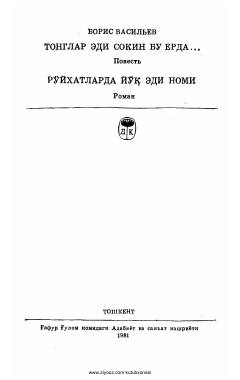

TEUrush davridagi jasorat va matonat haqidagi ta'sirli povest.
Ushbu asar Ulug' Vatan urushi davridagi oddiy askarlar va qizlarning qahramonligi haqida hikoya qiladi. Tinch o'tishi kerak bo'lgan uzoq raz'ezdda sodir bo'lgan voqealar va fashistlarga qarshi kurash tasvirlangan. Kitob insoniylik, matonat va jasorat mavzularini ochib beradi.